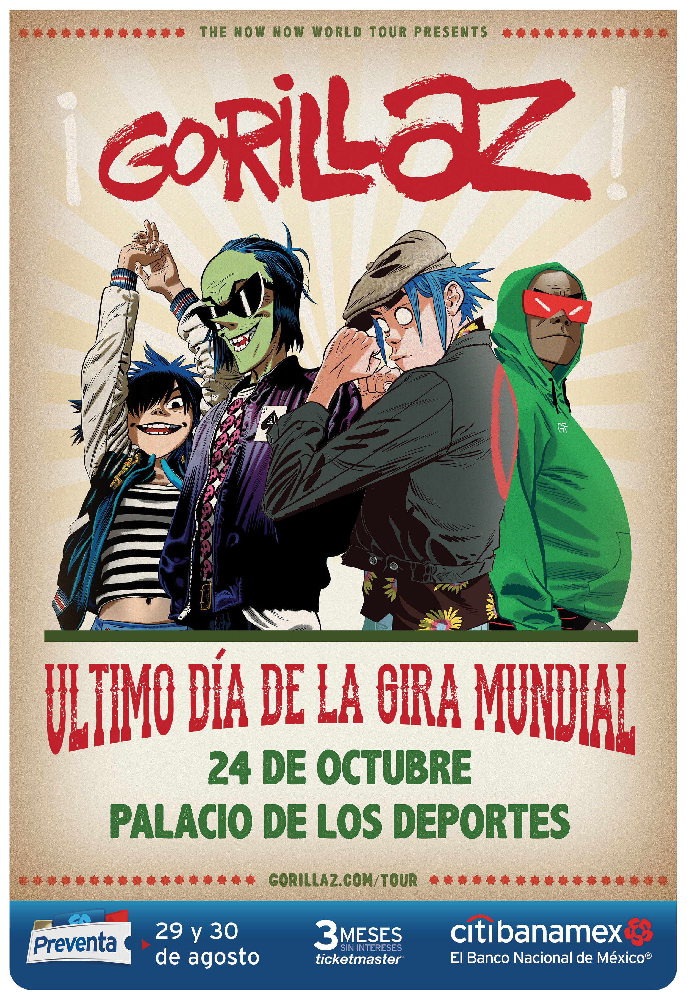

Gorillaz
Virtual Super Group.
Tour Dates
- Oct-08
Air Canada Centre Toronto, ON, Canada With The Internet
-
Oct-09
Bell Centre Montreal, QC, Canada With The Internet
-
Oct-11
Wells Fargo Center Philadelphia, PA, US With The Internet
-
Oct-13
Barclays Center Brooklyn, NY, US With The Internet
-
Oct-14
TD Garden Boston, MA, US With Little Dragon
-
Oct-16
United Center Chicago, IL, US With The Internet

GORILLAZ ANNOUNCE SHOW IN MEXICO CITY 22.08.18
The life of Gorillaz
Gorillaz are a British virtual band created in 1998 by musician Damon Albarn and artist Jamie Hewlett. The band primarily consists of four animated members: 2-D (lead vocals, keyboards), Murdoc Niccals (bass guitar, replaced by Ace D. Copular while incarcerated), Noodle (guitar, keyboards), and Russel Hobbs (drums and percussion). Their fictional universe is explored through music videos, interviews, and other short cartoons. In reality, Albarn is the only permanent musical contributor, and often collaborates with other musicians.
With Gorillaz, Albarn departed from the distinct Britpop of his band Blur and explored influences including hip hop, electronic music, and world music through an "eccentrically postmodern" approach. The band's 2001 debut album Gorillaz went Triple Platinum in the UK and Double Platinum in Europe and earned the group an entry in the Guinness Book of World Records as the Most Successful Virtual Band. It was nominated for the Mercury Prize, but the nomination was withdrawn at the band's request. Their second studio album, Demon Days (2005), went six times platinum in the UK and double platinum in the US, The band has won other awards, including one Grammy Award, two MTV Video Music Awards, an NME Award and three MTV Europe Music Awards.
The third Gorillaz studio album, Plastic Beach, was released in March 2010. The fourth, The Fall, was released in December 2010 as a free download for fan club members, then in April 2011 as a physical release. In 2017, after a five-year hiatus, Gorillaz announced their fifth studio album Humanz. Their sixth studio album, The Now Now, was released on 29 June 2018. Gorillaz have been nominated for ten Brit Awards and won Best British Group at the 2018 Brit Awards